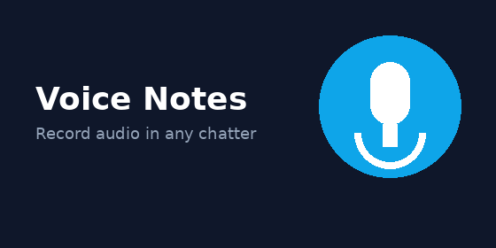
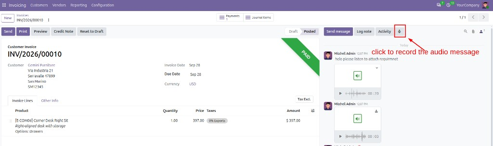
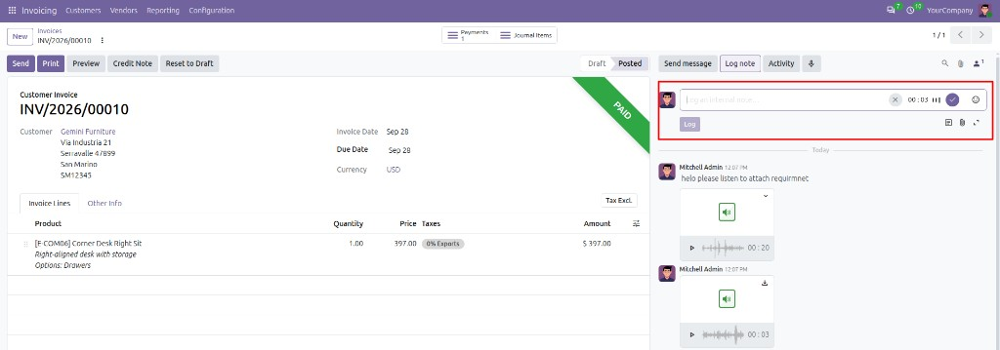
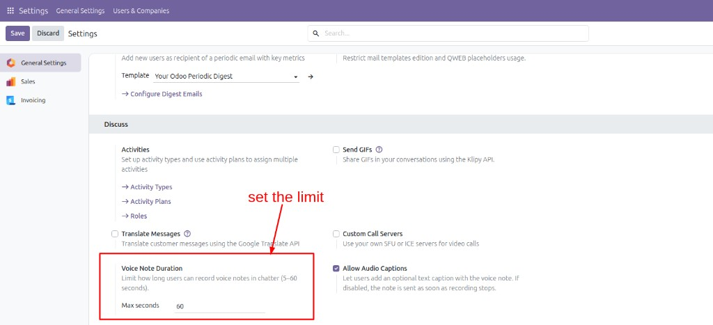

Voice Notes in Chatter lets users record short audio messages directly in Odoo chatter and Discuss. It reuses Odoo’s native voice stack (microphone, MP3 encoding and the built-in voice player) so you do not need extra Python or npm packages.
A quick visual guide so users can refer to the mic button, the recording UI, and the duration setting.
On any form with chatter, the microphone appears next to Send message, Log note and Activity. Click it to start an audio note (opens as an internal log note).

While recording you see a live timer, a small waveform, a cancel (X) control and a confirm (✓) control in the Log note composer. Confirm to attach the audio; then add an optional caption (if enabled) and click Log. Posted notes appear with the built-in voice player in the chatter history.

Go to Settings → General Settings → Discuss. Under Voice Note Duration, set Max seconds (5–60). Optionally enable or disable Allow Audio Captions (when captions are off, the note is sent as soon as recording stops).

Use the microphone action on CRM, Contacts, Invoicing, Project, custom models — everywhere chatter is available.
Listen to the recording with the native voice player, then send or discard the attachment.
Admins can allow text captions next to the audio, or auto-send as soon as recording stops.
Configure a maximum recording length (5–60 seconds) under Settings → Discuss.
Only users with the Record Voice Notes right see the microphone action.
Voice notes are stored as standard attachments and can be downloaded from the chatter.
mail_voice_note